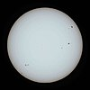

yellow-dwarf

Definition: A G-type main-sequence star (spectral type: G-V), also often, and imprecisely called a yellow dwarf, or G star, is a main-sequence star (luminosity class V) of spectral type G. Such a star has about 0.9 to 1.1 solar masses and an effective temperature between about 5,300 and 6,000 K. Like other main-sequence stars, a G-type main-sequence star converts the element hydrogen to helium in its core by means of nuclear fusion, but can also fuse helium when hydrogen runs out. The Sun, the star in the center of the Solar System to which the Earth is gravitationally bound, is an example of a G-type main-sequence star (G2V type). Each second, the Sun fuses approximately 600 million tons of hydrogen into helium in a process known as the proton–proton chain (4 hydrogens form 1 helium), converting about 4 million tons of matter to energy. Besides the Sun, other well-known examples of G-type main-sequence stars include Alpha Centauri, Tau Ceti, and 51 Pegasi.
Source: Wikipedia
Wikipedia Page (Something wrong with this association? Let us know.)
Wikidata Page (Something wrong with this association? Let us know.)